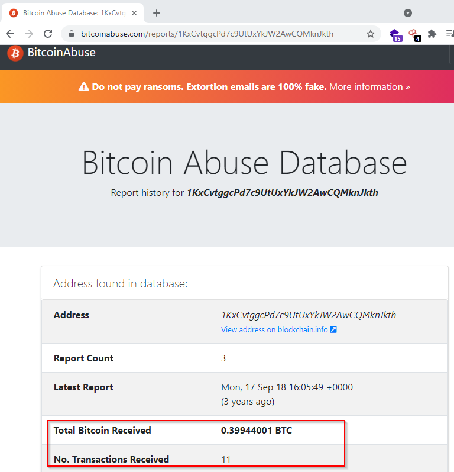
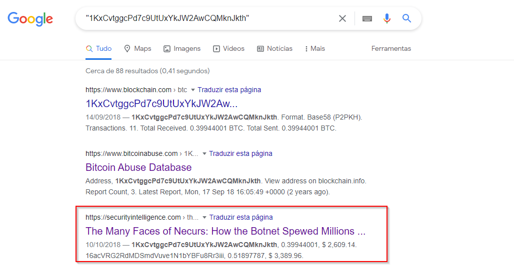
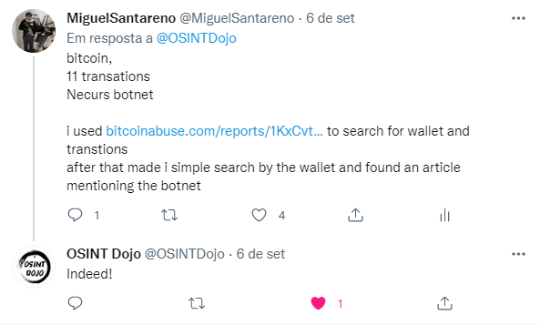

OSINT Dojo - OSINT challenge week 09/06/2021 - cryptowallet
The challenge is the following:

Methodology:
Search the wallet in https://www.bitcoinabuse.com/ and we can see the answers for the question 1 and 2

After that do a quick search on google to look for the wallet and found an article mentioning Necurs botnet

Answers:
Q - What cryptocurrency is this wallet for?
bitcoin
Q - How many transactions did this wallet have?
11 transactions
Q - What botnet is this wallet associated with?
Necurs botnet

#OSINTFORGOOD